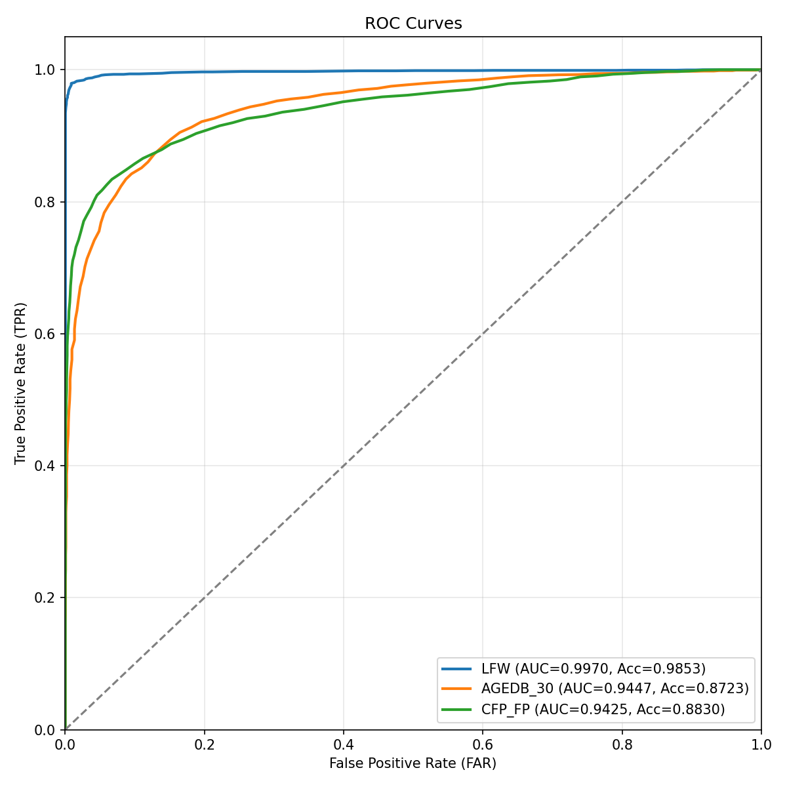
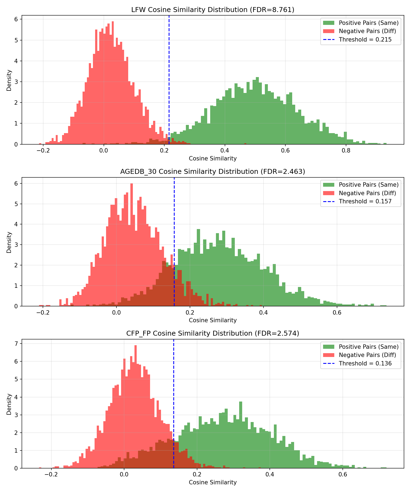

Hệ thống Nhận diện Khuôn mặt ArcFace
Ứng dụng IResNet-50 và Additive Angular Margin Loss
Mô hình Backbone
IResNet-50
Improved ResNet (43.6M Params)Kích thước Đặc trưng
512-D
Normalized Face EmbeddingQuy mô Dữ liệu
10,572 IDs
494,149 ảnh (Casia-WebFace)Độ trễ suy luận
3.6 ms
Đo trên NVIDIA GPU (Batch=1)Đánh giá Hiệu năng Mô hình
Thông số từ finetuned_best.pth1. Kết quả tổng hợp các tập dữ liệu
| Tập dữ liệu | Accuracy (%) | EER | AUC | F1-Score | Ngưỡng L2 | Ngưỡng Cos |
|---|---|---|---|---|---|---|
| LFW | 98.53% ± 0.64% | 0.0170 | 0.9970 | 0.9852 | 1.57 | 0.215 |
| AGEDB_30 | 87.23% ± 1.88% | 0.1278 | 0.9447 | 0.8697 | 1.68 | 0.157 |
| CFP_FP | 88.30% ± 1.73% | 0.1266 | 0.9425 | 0.8773 | 1.73 | 0.136 |
2. Điểm vận hành bảo mật (TPR @ FAR)
| Tập dữ liệu | TPR @ FAR=10% | TPR @ FAR=1% | TPR @ FAR=0.1% | TPR @ FAR=0.01% (*) |
|---|---|---|---|---|
| LFW | 99.37% | 98.00% | 94.73% | 57.47% |
| AGEDB_30 | 84.53% | 57.97% | 33.33% | 17.23% |
| CFP_FP | 85.77% | 70.23% | 49.23% | 22.69% |
(*) TPR @ FAR = 0.01% mang tính tham khảo do số lượng cặp negative trong các tập validation giới hạn ở 3,000 cặp.
3. Đặc tính không gian đặc trưng (Embedding Space)
| Tập dữ liệu | Sim Pos (Intra) | Sim Neg (Inter) | FDR (Fisher Ratio) | Embedding L2 Norm |
|---|---|---|---|---|
| LFW | 0.4976 ± 0.1413 | 0.0243 ± 0.0749 | 8.7614 | 40.7556 ± 4.8898 |
| AGEDB_30 | 0.2789 ± 0.1235 | 0.0487 ± 0.0791 | 2.4631 | 39.8665 ± 4.7970 |
| CFP_FP | 0.2708 ± 0.1331 | 0.0298 ± 0.0697 | 2.5735 | 36.8843 ± 7.7390 |
FDR (Fisher Discriminant Ratio) đo độ tách biệt của hai phân phối. Chỉ số này càng cao thì mô hình phân biệt khuôn mặt càng tốt và ít bị nhầm lẫn.
4. Độ bền bỉ ngoại cảnh (Robustness Metrics)
Độ suy giảm Accuracy càng thấp chứng tỏ mô hình xử lý góc nghiêng càng tốt.
Độ suy giảm càng thấp chứng tỏ mô hình ít bị ảnh hưởng bởi sự lão hóa của khuôn mặt.
Biểu đồ Phân tích Trực quan
Đồ thị kết quả đánh giáĐường cong ROC (ROC Curves)

Phân phối độ tương đồng Cosine (Cosine Similarity Distributions)
